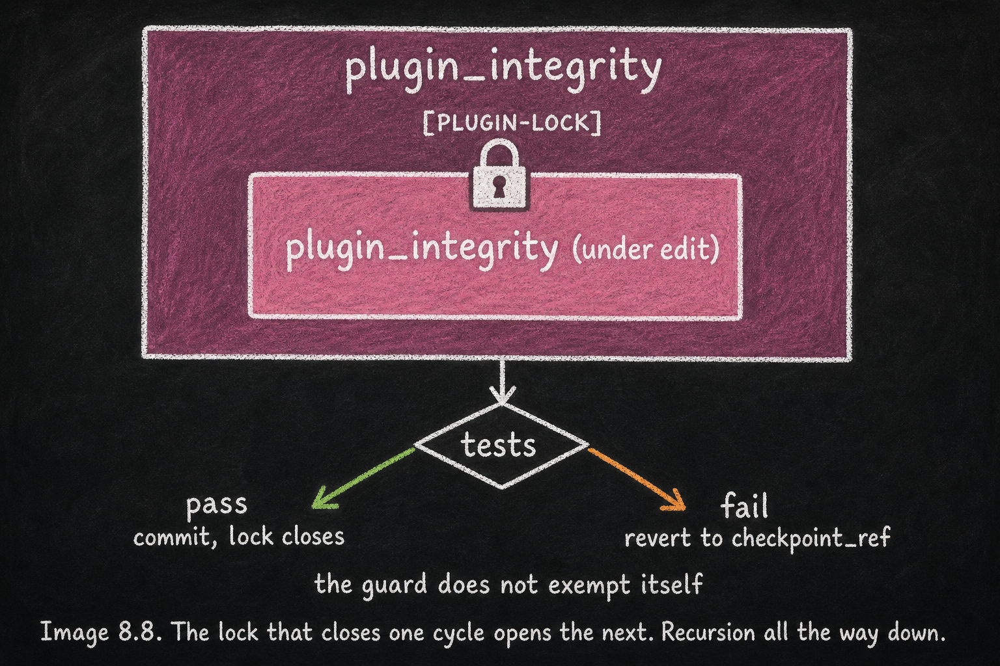

A System That Safely Modifies Itself
Essay 8.8 — From Apprentice to Architect, Part 8 of 9.
Essay 8.7 closed the equilibrium claim — the brain reaches a ceiling while the knowledge layer never does. The discipline that holds that equilibrium is the same discipline that lets the brain edit itself safely. This essay opens the recursion directly — the Tier-3 close of the series.
Coordinated roles produce the work: the plugins enforce, the phases produce, and CONDENSE absorbs the cycle’s learning back into the brain. The recursion that protects every edit is itself a small machinery — the lock ceremony around each session, the historian narrating each cycle’s drift, the drift counter that ratchets the next lock, the safe-lock cycle that reverts a bad edit before it lands. The knowledge layer accumulates what survives this discipline; the maturation arc fossilizes what survives long enough to harden. ⓘ
A patent attorney whose seed has authored a prior-art-search plugin will, eventually, need to fix a bug in that plugin’s own search-result-deduplication logic — and the fix will require the attorney’s seed to issue the lock for the plugin, run that plugin’s own tests, pass them, and let the plugin lock itself before the change is committed. The same recursive ceremony described below for the prototype’s plugin_integrity applies to every plugin the operator’s seed has authored, in every operator’s domain. The recursion is not a special case of the prototype; it is the architecture. ⓘ
The Recursion Is Real
The recursion is real, not metaphorical. The prototype recently needed to fix a concurrency race in plugin_integrity's own guard hook — the exact code that polices every other plugin’s edits. The fix required the agent to issue the plugin-lock for plugin_integrity, run plugin_integrity's own test suite, pass it, and let plugin_integrity lock itself before the change was committed. The guard did not exempt itself. The lock that closed that cycle is the same lock that opens the next. The historian subagent attached to plugin_integrity narrated the cycle’s commits into the plugin’s own docs/evolution.md. And during CONDENSE, the agent edited the root brain itself — .claude/CLAUDE.md — but only because it was in CONDENSE, the only phase whose guard permits writes to the brain. ⓘ
Every layer is reachable. Every reach is gated by the same gates the rest of the system runs on.
Every part of the loop has a guard. Every part has a self-test. Every part has a coaching voice and a structured block. The architecture does not trust the operator to remember the rules. It does not trust the agent to remember the rules. It encodes the rules into the parts that touch the work, and lets the parts enforce themselves on each other. ⓘ
Why This Matters for Reliability
The reason this matters is the reason agent reliability has been hard. A reliable agent is one whose behavior you can predict from cycle to cycle, not a clever one whose tricks impress in a single session. Predictability across time requires that the agent’s substrate — its rules, its hooks, its phase boundaries — outlive any single session and any single LLM context. The seed agent is built so that the substrate does outlive those things. The chat dies. The model rolls forward. The operator forgets. The brain remembers, because the brain is on the filesystem, protected by guards that the filesystem itself enforces. ⓘ

The Rollback Substrate
The deepest of those guards is the test-pass-or-revert cycle. Every plugin edit in the prototype passes through safe-lock.sh. If every test passes, the change commits and the lock closes. If any test fails, the working tree is rolled back to a captured checkpoint_ref and a structured entry lands in plugin_integrity's revert log — timestamp, list of failed tests, list of files restored, the SHA before the revert. The log is not aspirational; it is forensic. One real entry from May 2026 shows a multi-file edit during tmux-dispatch + window-pin work that failed the brain_guard test suite; the safe-lock cycle reverted all seventeen touched files in one atomic operation, and the operator went looking for the actual bug. The brain did not absorb a broken state. The test suite said no, and the substrate stayed coherent. ⓘ
That is the durability guarantee that travels — not careful authorship, not clever prompts, not the discipline of any individual cycle. Code does not land if it breaks. The default is rollback. A system that safely modifies itself, under your direction, in your filesystem.
That is the seed agent. The limit on the guarantee is the test coverage: a plugin whose own tests miss the breaking case will let a broken edit land. The architecture trusts the operator’s seed to author and maintain tests; the rollback substrate works only as far as the tests reach. ⓘ
The architecture’s deepest guarantee is rollback. The substrate stays coherent because tests guard every edit and revert the unsafe ones. The next essay is the finale — the seed handed over, the architecture handed to you.
Essay 8.8 — From Apprentice to Architect, Part 8 of 9.
Previous: Essay 8.7 — The Brain Stops Growing in Size — why the brain reaches a ceiling while the knowledge layer never does. Next: Essay 8.9 — The Seed Is Yours — the series finale, the bridge to the public seed agent, and the architecture handed over.
Comments